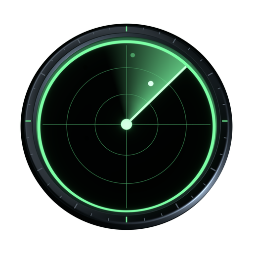

India · live from open dataभारत · खुले डेटा से, लाइव
India, live from space.भारत, अंतरिक्ष से लाइव।Free. No sign-up.मुफ़्त। बिना साइन-अप।
Watch ISRO's next launch from Sriharikota, follow India's satellites in orbit, find out when the space station crosses your city, and check cyclones, Himalayan earthquakes and air quality across the subcontinent, on a 3D Earth that runs in your phone's browser.श्रीहरिकोटा से इसरो का अगला लॉन्च देखिए, कक्षा में घूमते भारत के उपग्रहों को फ़ॉलो कीजिए, जानिए कि अंतरिक्ष स्टेशन आपके शहर के ऊपर से कब गुज़रेगा, और पूरे उपमहाद्वीप के चक्रवात, हिमालय के भूकंप और हवा की गुणवत्ता देखिए। सब कुछ एक 3D पृथ्वी पर, जो सीधे आपके फ़ोन के ब्राउज़र में चलती है।
Works on any recent phone. The website shows satellites, launches, weather, quakes and air quality. It does not show live aircraft.किसी भी नए फ़ोन पर चलता है। वेबसाइट पर उपग्रह, लॉन्च, मौसम, भूकंप और हवा की गुणवत्ता दिखती है। लाइव हवाई जहाज़ इसमें नहीं दिखते।
Pick a viewएक नज़ारा चुनिए
Made for India.भारत के लिए बना।
Every button opens the globe already set up over India: the right place, the right layers. Nothing to configure, nothing to sign up for.हर बटन ग्लोब को पहले से भारत के ऊपर तैयार खोलता है: सही जगह, सही लेयर। न कुछ सेट करना, न साइन-अप।
Launchesलॉन्च
ISRO launches from Sriharikotaश्रीहरिकोटा से इसरो के लॉन्च
The two pads at Satish Dhawan Space Centre on the globe, and every upcoming launch from India in the countdown list: rocket, payload, and the date as precisely as it has been announced.ग्लोब पर सतीश धवन अंतरिक्ष केंद्र के दोनों लॉन्च पैड, और भारत से होने वाला हर आगामी लॉन्च: रॉकेट, पेलोड और तारीख, उतनी सटीक जितनी घोषित हुई है।
India's satellites, in orbitकक्षा में भारत के उपग्रह
More than 50 Indian satellites are among the 15,000+ active ones the globe draws: Cartosat, Oceansat, NISAR, and the INSAT, GSAT and NavIC satellites parked over the Indian Ocean. Every orbit is worked out in your browser.ग्लोब जिन 15,000 से ज़्यादा सक्रिय उपग्रहों को दिखाता है, उनमें भारत के 50 से ज़्यादा हैं: कार्टोसैट, ओशनसैट, निसार, और हिंद महासागर के ऊपर टिके इनसैट, जीसैट और नाविक उपग्रह। हर कक्षा की गणना आपके ब्राउज़र में होती है।
Showing all 15,000 is heavy for older phones; switch "All other active satellites" off in Layers if yours slows down.सभी 15,000 उपग्रह पुराने फ़ोन पर भारी पड़ सकते हैं; फ़ोन धीमा लगे तो लेयर में "All other active satellites" बंद कर दीजिए।
Space stationअंतरिक्ष स्टेशन
When the ISS crosses your cityISS आपके शहर के ऊपर कब
The next passes over six cities, worked out on this page from today's orbit data, in Indian time. Visible means your sky is dark while the station is still in sunlight: a bright, steady dot crossing in a few minutes.छह शहरों के ऊपर अगले पास, आज के कक्षा डेटा से इसी पेज पर निकाले गए, भारतीय समय में। दिखेगा का मतलब: आपका आसमान अँधेरा है और स्टेशन पर अब भी धूप है, यानी कुछ मिनटों में आसमान पार करता एक चमकीला, स्थिर बिंदु।
Tonight's sky, and India's darkestआज रात का आसमान, और भारत का सबसे अँधेरा
Tonight above you lists the planets, the Moon, meteor showers, space station passes and the galaxies and clusters your sky can show, worked out from your phone's location on your phone. The light-pollution layer rates the Hanle Dark Sky Reserve in Ladakh Bortle 1, the darkest class, and India Gate in Delhi Bortle 8.Tonight above you बताता है कि आज रात ग्रह, चाँद, उल्का-वर्षा, अंतरिक्ष स्टेशन के पास और आपके आसमान में दिखने लायक आकाशगंगाएँ और तारा-समूह कब और कहाँ हैं; गणना आपके फ़ोन की लोकेशन से, आपके फ़ोन पर ही होती है। प्रकाश-प्रदूषण की लेयर लद्दाख के हानले डार्क स्काई रिज़र्व को बोर्टल 1 (सबसे अँधेरी श्रेणी) और दिल्ली के इंडिया गेट को बोर्टल 8 बताती है।
Sky brightness is modelled (Falchi et al. 2016 atlas, from 2014 satellite data), not measured tonight. The page and the app use English names for objects in the sky.आसमान की चमक एक मॉडल से है (Falchi et al. 2016 एटलस, 2014 के उपग्रह डेटा से), आज रात की माप नहीं। ऐप में आसमान की चीज़ों के नाम अंग्रेज़ी में हैं।
Monsoon & cyclonesमानसून और चक्रवात
Bay of Bengal and Arabian Seaबंगाल की खाड़ी और अरब सागर
Rain seen from space (NASA IMERG), wind and pressure from the NOAA GFS forecast up to five days ahead, and tropical cyclones with their forecast tracks (GDACS, NASA EONET) whenever one is active.अंतरिक्ष से दिखती बारिश (NASA IMERG), NOAA GFS पूर्वानुमान से पाँच दिन आगे तक हवा और दबाव, और जब कोई सक्रिय हो तो उष्णकटिबंधीय चक्रवात उनके अनुमानित रास्ते के साथ (GDACS, NASA EONET)।
For warnings, follow IMD (mausam.imd.gov.in) and your state's disaster authority.चेतावनियों के लिए IMD (mausam.imd.gov.in) और अपने राज्य के आपदा प्राधिकरण की सुनिए।
Himalayaहिमालय
Himalayan earthquakesहिमालय के भूकंप
Every earthquake USGS has reported in the last 24 hours, sized by magnitude, along the Himalayan arc from Afghanistan to Myanmar and across the rest of the region. Outside the US, USGS lists mainly the larger ones, roughly M4.5 and up.पिछले 24 घंटों में USGS के दर्ज किए हर भूकंप, तीव्रता के हिसाब से छोटे-बड़े निशान, अफ़ग़ानिस्तान से म्यांमार तक हिमालय की पूरी पट्टी पर और आसपास के इलाक़े में। अमेरिका के बाहर USGS ज़्यादातर बड़े भूकंप ही दर्ज करता है, लगभग M4.5 और उससे ऊपर।
India's own record is the National Center for Seismology (seismo.gov.in).भारत का अपना रिकॉर्ड राष्ट्रीय भूकंप विज्ञान केंद्र (seismo.gov.in) रखता है।
Air qualityहवा की गुणवत्ता
Delhi and the Indo-Gangetic plainदिल्ली और सिंधु-गंगा का मैदान
Modelled PM2.5 and US AQI on a grid over Delhi, Punjab, Uttar Pradesh, Bihar and Bengal (CAMS via Open-Meteo), and smoke and dust seen from space (NASA OMPS, daily). Tap a dot for its numbers.दिल्ली, पंजाब, उत्तर प्रदेश, बिहार और बंगाल के ऊपर ग्रिड पर PM2.5 और US AQI का मॉडल (CAMS, Open-Meteo के ज़रिए), और अंतरिक्ष से दिखता धुआँ और धूल (NASA OMPS, रोज़ाना)। किसी बिंदु को छूकर उसके आँकड़े देखिए।
A model, not CPCB station readings: for health decisions use the official AQI (airquality.cpcb.gov.in).यह मॉडल है, CPCB स्टेशनों की रीडिंग नहीं: सेहत से जुड़े फ़ैसलों के लिए आधिकारिक AQI (airquality.cpcb.gov.in) देखिए।
2D map2D नक्शा
South Asia on a flat mapसपाट नक्शे पर दक्षिण एशिया
Lighter than the globe, for older phones: earthquakes, storms, forecast weather and OpenStreetMap layers over India and its neighbours.ग्लोब से हल्का, पुराने फ़ोन के लिए: भारत और पड़ोसी देशों के ऊपर भूकंप, तूफ़ान, मौसम का पूर्वानुमान और OpenStreetMap की लेयर।
India's missions in the Solar Systemसौर मंडल में भारत के मिशन
ISRO's spacecraft fly in the Solar System view on NASA JPL's tracks: Aditya-L1 watching the Sun from the Sun–Earth L1 point, 1.5 million km towards the Sun, and Chandrayaan-2 circling the Moon. Tap a mission to fly there; the older ones open at their moment.सौर मंडल व्यू में इसरो के यान NASA JPL के ट्रैक पर उड़ते हैं: सूर्य-पृथ्वी L1 बिंदु से, जो सूरज की ओर 15 लाख किमी दूर है, सूरज पर नज़र रखता आदित्य-L1, और चंद्रमा की परिक्रमा करता चंद्रयान-2। किसी मिशन पर टैप करके वहाँ पहुँचिए; पुराने मिशन अपने उसी पल पर खुलते हैं।
Chandrayaan-2चंद्रयान-2Orbiting the Moon since 2019, about 100 km up2019 से चंद्रमा की परिक्रमा में, लगभग 100 किमी ऊपर
Aditya-L1आदित्य-L1In a halo orbit around Sun–Earth L1 since January 2024जनवरी 2024 से सूर्य-पृथ्वी L1 के चारों ओर हेलो कक्षा में
Chandrayaan-3चंद्रयान-3Vikram landed near the south pole on 23 August 2023; its propulsion module went back to Earth orbitविक्रम 23 अगस्त 2023 को दक्षिणी ध्रुव के पास उतरा; उसका प्रणोदन मॉड्यूल पृथ्वी की कक्षा में लौट आया
Chandrayaan-1चंद्रयान-1India's first Moon mission (2008); silent since 2009, found by NASA radar in 2016 still circling the Moonभारत का पहला चंद्र मिशन (2008); 2009 से ख़ामोश, 2016 में NASA के रडार ने उसे चंद्रमा की परिक्रमा करते पाया
Trajectories: NASA JPL Horizons. Chandrayaan-2's published track runs to 8 November 2026 (a prediction after late September), Aditya-L1's to January 2027.ट्रैक: NASA JPL Horizons। चंद्रयान-2 का प्रकाशित ट्रैक 8 नवंबर 2026 तक है (सितंबर के आख़िर के बाद अनुमान), आदित्य-L1 का जनवरी 2027 तक।
Recorded over Indiaभारत के ऊपर रिकॉर्ड किया गया
See it on a phone.फ़ोन पर देखिए।
Recorded from the website on a phone-sized screen, not mocked up.वेबसाइट से फ़ोन जितनी स्क्रीन पर रिकॉर्ड किया गया, कोई नकली डेमो नहीं।
What you won't getक्या नहीं मिलेगा
Live aircraft on the website. The flight networks don't serve web pages, so planes need the free download for Windows, Mac or Linux.वेबसाइट पर लाइव हवाई जहाज़। उड़ानों के नेटवर्क वेब पेजों को डेटा नहीं देते, इसलिए जहाज़ देखने के लिए Windows, Mac या Linux का मुफ़्त डाउनलोड चाहिए।
Official warnings. Everything comes from public feeds and models and can be late or wrong. For cyclones, earthquakes and air quality, IMD, NCS and CPCB are the authorities.आधिकारिक चेतावनियाँ। सब कुछ सार्वजनिक फ़ीड और मॉडल से आता है, देर से या ग़लत हो सकता है। चक्रवात, भूकंप और हवा की गुणवत्ता के लिए IMD, NCS और CPCB ही प्रामाणिक स्रोत हैं।
Hindi inside the app. This page is in both languages; the globe, the map and Tonight are in English for now.ऐप के अंदर हिन्दी। यह पेज दोनों भाषाओं में है; ग्लोब, नक्शा और Tonight फ़िलहाल अंग्रेज़ी में हैं।

Free, for everyoneमुफ़्त, सबके लिए
Look up, India.ऊपर देखो, भारत।
No account, no ads inside, no tracking. A hobby project on open data, with its code open for anyone to read.न अकाउंट, न अंदर विज्ञापन, न ट्रैकिंग। खुले डेटा पर बना एक शौकिया प्रोजेक्ट, जिसका कोड कोई भी पढ़ सकता है।